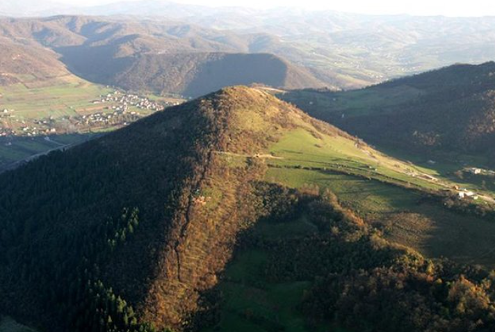

You stand at the threshold. This portal is the first step on a path into the living mystery of the Bosnian Pyramids. Listen to the echoes, consult the runes, and decide if you will help preserve this sacred space. Your journey starts now.
The Perseid Alignment is Active!
Until the last meteor falls this week, the veil is thin. All new Keepers will have their offering rune etched in starlight.
This portal is both an interactive art project and a living investigation. Here, you can learn about our mission and the real-world research that inspires it.
Our Mission
Our goal is to create a space for contemplation and imagination. We use technology and storytelling not to provide definitive answers, but to evoke the profound sense of wonder that sites like the Bosnian Pyramids inspire. We believe that by engaging with the mystery, we connect with a deeper part of ourselves.
The Research
The theories surrounding the Bosnian Pyramids, primarily researched by Dr. Semir Osmanagić, suggest that the hills in the Visoko valley are colossal man-made structures. Key claims include the presence of high-quality, ancient concrete blocks, precise orientation to cosmic north, and measurable energy phenomena. This research challenges conventional historical timelines and suggests the existence of a highly advanced ancient civilization.
The Controversy
It is important to acknowledge that these claims are not accepted by mainstream archaeology and geology. Many established institutions consider the hills to be natural formations called flatirons. This project does not claim to resolve this debate, but rather to explore the power of the *idea* and the energy of the location that has drawn thousands of volunteers and researchers from around the world.
Each location in the valley has its own unique energy, its own secret to share. Click a hotspot on the map to discover its lore and attune to its runic frequency.

The Seer's Whisper
Seeker, present your query to the stones. Focus your mind on a question, and the runes will offer a reflection. Not a simple answer, but a deeper truth to contemplate.
The Discoverer & The Dogma
Before the world knew him as "the Bosnian pyramid man," Dr. Osmanagić had already built a formidable academic and professional career. His background is crucial to understanding the methodical approach he brings to his work. He holds a Ph.D. in the Sociology of History, with a specific focus on the Mayan civilization, and has served as a Professor of Anthropology.
His on-the-ground investigation began in 2005. His team, adopting a multidisciplinary approach, brought in geologists, physicists, and archaeologists. Core drilling and excavations revealed what appear to be high-quality, man-made concrete blocks, far stronger than modern concrete. Instruments have also allegedly detected an unusual, continuous electromagnetic energy beam emanating from the apex of the Pyramid of the Sun.
Dr. Osmanagić's claims were met with immediate and fierce opposition. However, he and his supporters highlight a critical point: the most vocal critics have largely been "armchair archaeologists" who have never set foot in Visoko to examine the evidence firsthand. He frames this as a battle against institutional dogma that refuses to entertain evidence challenging established historical timelines.
The Inner Well
Still your mind and connect with the ancient energies. Focus on the pulsing rune and allow its meaning to guide your meditation. This is a journey inward.
ᛗ
Ready to begin your inner journey.
The Runic Chronicle
To add your energy to the veil, you must first align with its frequency. Each week, the veil resonates with a new rune. Contemplate its meaning, then share a story from your life that reflects its theme.
This Week's Rune
Tell your tale, keeper.
Your Personal Chronicle
Become a Keeper
The Seeker's Journey leads here. To become a Keeper is to move from observer to guardian. It is a commitment to help preserve this space and support the ongoing expedition into the mystery. Your offering is the final step in your initiation.
The Keepers' Circle
Each rune below represents a Keeper who has completed their journey. Join them.
Initiate
$5
A one-time offering to show your belief in the mission.
✅ Access to the Inner Sanctum lore.
✅ Your chosen runic initial added to the Keepers' Circle.
Your initiation is complete. Thank you for your offering, Keeper. As a guardian, you are granted access to exclusive tools to aid your journey.
The Keeper's Toolkit
Deeper Lore: The secrets of the runes are now open to you. The Elder Futhark is more than an alphabet; it is a cosmological map. Each rune is a key to a specific type of energy or event in the universe. Fehu (ᚠ), seen as wealth, is truly the untamed, expansive energy of creation...
The Keeper's Meditation: Access the full, extended guided meditation to better align with the valley's energy. [A link to your exclusive audio file would go here]
The Pyramid Cipher: Download this high-resolution runic cipher, a key to decoding the hidden whispers of the valley. [A link to your exclusive image file would go here]